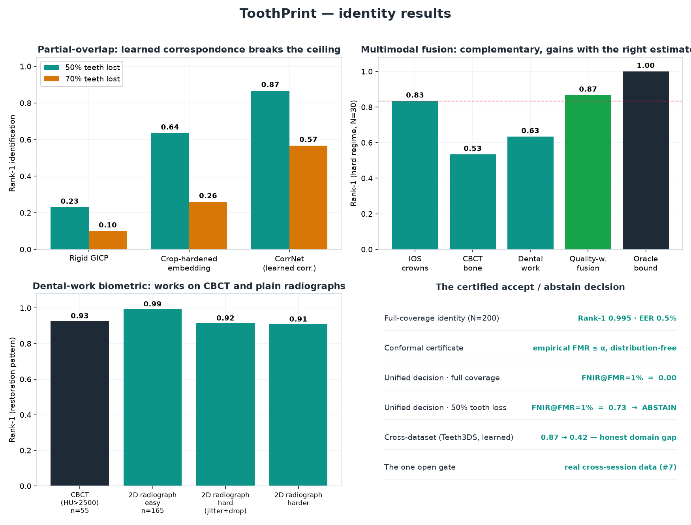
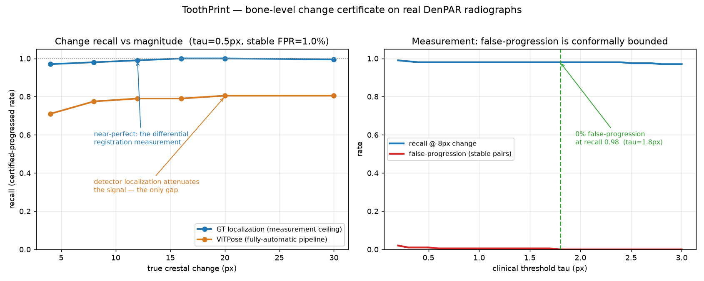

Forensic dental biometrics · certified · open source
A face can be lost.
The teeth still know who you are.
ToothPrint reads the dental arch three ways — who it belongs to, whether it changed, and what its surface is — and returns a certificate, not a guess. Each verdict carries a finite-sample false-alarm bound, and identity survives even when half the teeth are missing.
- Rank-1, 3D scans (N=200)
- 0.995
- Rank-1, 50% tooth loss
- 0.87
- Conformal false-alarm
- ≤ α

Results, in one place
Held to the bar that matters — and honest about the rest
Measured on public single-timepoint data (Poseidon3D, Teeth3DS+, DenPAR, Figshare CBCT+IOS) with synthetic re-scans and crops, so the numbers are in-simulation ceilings. The one binding gate — real cross-session data — is stated plainly below.
| Capability | Result | |
|---|---|---|
| Identity — 3D scans | Rank-1 0.995 · EER 0.005 · AUC 0.997 · open-set FNIR 0.030 · 0.05 mm | ✓ |
| Identity — partial overlap (learned correspondence) | Rank-1 0.87 at 50% tooth loss — ~3.8× rigid GICP (0.23) | ✓ |
| Identity — 2D radiographs | Rank-1 1.000 (N=400, EER 0) | ✓ |
| Identity — certified accept/abstain | FNIR@FMR=1% 0.00 full coverage; abstains under heavy tooth loss | ✓ |
| Dental-work biometric (CBCT + radiograph) | Rank-1 0.93 CBCT · 0.91–0.99 radiograph | ✓ |
| Change — measurement | recall 0.98 at 0% false-progression | ✓ |
| Surface certificate | 0.99 localized vs 0.00 naive, to 0.4 mm noise, 0% false-change | ✓ |
| Reconstruction (photos → mesh) | ~0.3 mm median 2DGS mesh, 38% better than 3DGS | ✓ |
01 · Identity
Recognise a person by their teeth — even half of them
A dental arch is individual. A genuine re-scan snaps into place; a stranger's anatomy cannot. The hard case is a query missing teeth, where every rigid method collapses — ToothPrint solves it with a learned point-correspondence matcher.

Full coverage: best rigid fit to each arch (PCA-axis init → Generalized-ICP), smallest surface distance wins — shape, not pose. Partial overlap: CorrNet learns a descriptor per point (InfoNCE on crop correspondences); a half-arch is matched point-to-point and verified by a rigid Procrustes residual, lifting 50%-loss identity from 0.23 to 0.87. Decision: retrieve by embedding → verify by correspondence → accept above a conformal threshold, else abstain.
02 · Change
Did the bone level really change?
Re-positioning, exposure, and detector error swamp a real sub-millimetre change. ToothPrint measures it differentially — registering the bone-margin patch between timepoints against a stationary crown reference — and certifies the shift only when its conformal interval clears the clinical threshold.

YOLO26-pose localises the CEJ/bone-crest (median 18 px); sub-pixel template matching measures the margin shift relative to a stationary reference; a conformal certificate decides — and never certifies change it cannot distinguish from acquisition noise. The 0.91 ceiling is DenPAR label noise, shown not hidden: a 2× larger detector made it worse.
03 · Surface
Did the 3D surface really change?
From an intraoral scan or a handful of photos, ToothPrint reconstructs the arch and certifies a surface change against the reconstruction's own error — so a real lesion is flagged, scanner noise is not, and the change is localized.

2D Gaussian Splatting surfels + multi-view TSDF rebuild a watertight mesh from photos (~0.3 mm median, 38% better than 3DGS) → de-biased regional displacement vs calibrated noise → conformal certificate. Benchmarked against M3C2 (the geomorphology-standard change distance); our complementary edge is the finite-sample false-change bound it lacks.
The guarantee, in your hands
A certificate fires only when it is sure
Drag the measured change. The conformal interval moves with it. The verdict turns changed only when the whole interval clears the change threshold, stable only when it sits below the stable threshold — and abstains everywhere between, on purpose.
- measured
- 0.30 mm
- interval
- [0.19, 0.41]
- conformal α
- 0.10
interval = measured ± conformal radius · radius grows with reconstruction noise · thresholds: stable 0.35 mm / change 0.75 mm
What the numbers do not claim
The honest limits
A research tool earns trust by stating where it stops. None of these is hidden — they are in the paper, the README, and the result JSONs.
- The binding gate — real cross-session data. Every identity number rests on synthetic re-scans of single-timepoint public data. No code closes this; it needs a real same-patient longitudinal dataset (see below).
- Open-set rejection collapses under heavy tooth loss. A half-arch fits many gallery arches, so under 50%+ loss the certified decision abstains rather than risk a false accept.
- The learned matcher carries a cross-dataset domain gap. CorrNet trained on Poseidon3D drops 0.87 → 0.42 on a different real dataset (Teeth3DS+) — still above chance and above rigid GICP, but not full transfer.
- Change is detector-limited. End-to-end recall caps at ~0.91 on DenPAR label noise, short of the 0.98 measurement ceiling.
- Not a cleared medical device. Findings are advisory, expert-confirmed; the conformal guarantee holds only on the calibrated distribution.
One signal, one stack
How it works
Intraoral scan or periapical radiograph
Teeth + landmarks (YOLO26-pose) or arch point cloud
rigid best-fit (Generalized-ICP) / learned point correspondence / sub-pixel template matching
conformal interval → identity · change · surface, or abstain